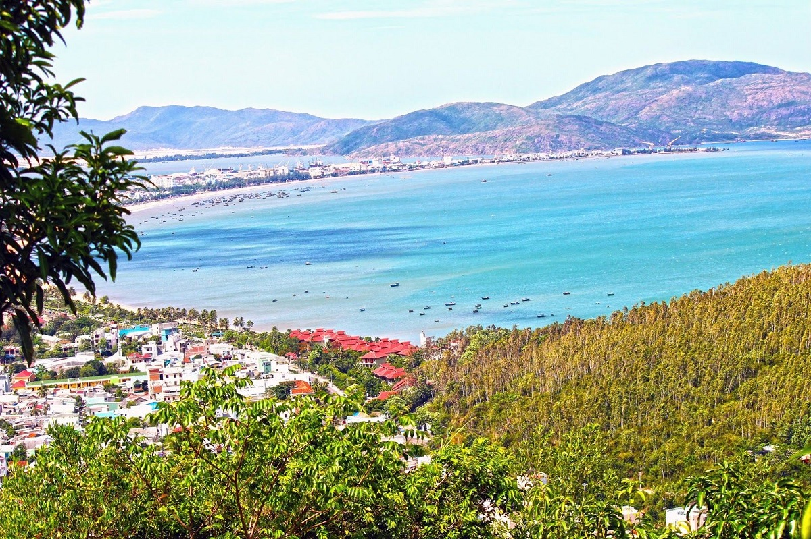
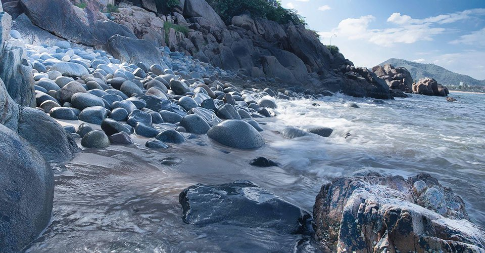
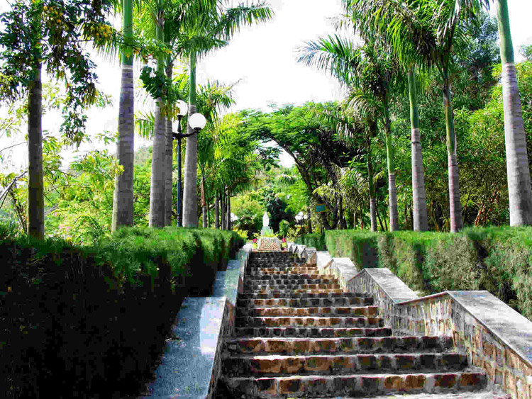

 Cách trung tâm thành phố Qui Nhơn chừng 3km về phía Đông Nam thuộc phường Ghềnh Ráng, “Ghềnh Ráng” là tên gọi quần thể thiên nhiên hội tụ đủ kỳ sơn tú thủy, một tuyệt tác của tự nhiên làm liên tưởng đến nghệ thuật xếp đặt của một nghệ sĩ tài ba, trở thành nguồn cảm hứng bất tận của giới văn nghệ sĩ và còn đọng lại trong ký ức người địa phương Cái tên Ghềnh Ráng nghe chân chất và mộc mạc, đã gợi nên bao nỗi tò mò (!). Theo giải thích từ các bậc cao niên, mỗi khi đi ngang khu vực nhiều ghềnh lắm rạn này, các ngư dân thường phải tìm cách hãm bớt gió cho thuyền đi chậm lại hòng tránh va vấp với những dãi đá ngầm. Động thái “hãm” gió này giới đi biển gọi là “ráng”. Như một quy luật, mỗi lần đi ngang “gềnh” này, các ngư dân đều phải “ráng” và không biết từ lúc nào, cái tên “Ghềnh Ráng” đã tự nhiên đi vào đời sống của người dân địa phương…
 Đứng từ đỉnh Ghềnh Ráng, ta có thể phóng tầm mắt bao quát cả bốn bề: phía Nam là những dãy núi dựng thành nhấp nhô dọc ven biển như bức tranh sơn thủy kéo dài đến tận Quy Hòa, phía Đông nhìn ra biển cả bao la với cù lao Xanh xa xa về phía Đông Nam, chếch về phía Đông Bắc là bán đảo Phương Mai như tấm bình phong khổng lồ án ngữ cửa biển Thị Nại, phía Bắc từ sau những dải cát vàng óng ả hiện lên thành phố Qui Nhơn với những đường phố dọc ngang, phía Tây là khu đồi Xuân Vân rộng đến 168ha, nguồn dự trữ qúy báu cho phát triển du lịch Ghềnh Ráng trong tương lai… Ghềnh Ráng khoác lên mình vẻ đẹp dung dị mỗi khi đêm về. Trên mặt biển, đèn của hàng ngàn chiếc thuyền câu mực lung linh tựa những đám sao sa làm xao động cả mặt nước…
 Ngoài vẻ đẹp tự nhiên, Ghềnh Ráng từng làm nặng lòng bao lữ khách bởi nơi đây in đậm dấu ấn của một nhà thơ tài hoa mệnh bạc, một tên tuổi lớn trong làng thi ca Việt Nam: Hàn Mạc Tử. Hàn Mạc Tử là người khởi đầu cho dòng thơ lãng mạn hiện đại Việt Nam và cũng là người khởi xướng ra “Trường thơ Loạn”. Do mắc chứng bệnh hiểm nghèo, Ông đã phải sống gần hai tháng cuối đời tại trại phong Quy Hòa và qua đời ngày 11-11-1940 khi mới 28 tuổi, để lại cho đời di sản thơ khá đồ sộ Theo lời kể của một số bạn bè, Hàn Mạc Tử đã có ước nguyện khi mất được yên nghỉ trên đèo Son là một địa điểm ở đầu thành phố Quy Nhơn. Tuy vậy, khi mới qua đời Ông đã được an táng tại khu nghĩa trang của trại phong Quy Hòa. Đến tháng 2/1959, gia đình cùng các thân hữu mới được phép cải táng và di dời phần mộ của Ông ra Ghềnh Ráng. Tháng 5/2008, Công ty Cổ phần Du lịch Sài Gòn - Quy Nhơn đã đầu tư chỉnh trang để nơi đây trở thành khu tưởng niệm một danh nhân giữa phong cảnh thích hợp với hồn thơ Hàn Mạc Tử.
Project 4 - Môn xây dựng website đầu tiên (WEB101x)
Họ tên: Nguyễn Anh Tuân
MSSV: FX00336